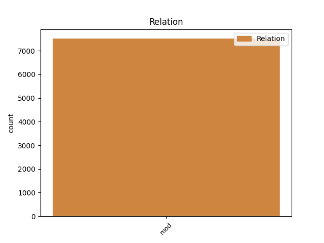
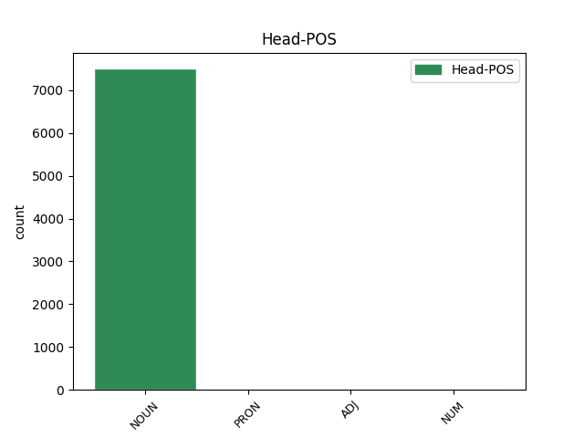
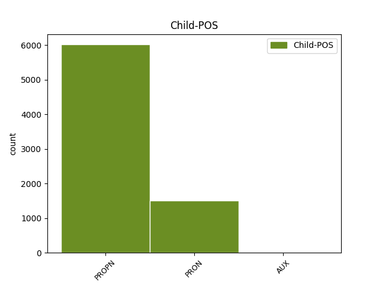

Distribution of features within this leaf



Agreement Rules sorted by frequency.
- When the dependent token is the modifer(mod) of the head token, and the head token is NOUN and the dependent token is PROPN.
1 - _ _ _ _ 0 _ _ _
2 Как _ _ _ _ 0 _ _ _
3 можно _ _ _ _ 0 _ _ _
4 грибом _ _ _ _ 0 _ _ _
5 брезговать _ _ _ _ 0 _ _ _
6 ! _ _ _ _ 0 _ _ _
7 - _ _ _ _ 0 _ _ _
8 прозвучал _ _ _ _ 0 _ _ _
9 во _ _ _ _ 0 _ _ _
10 мне _ _ _ _ 0 _ _ _
11 голос голос NOUN _ Animacy=Inan|Case=Nom|Gender=Masc|Number=Sing 0 _ _ _
12 Верони Вероня PROPN _ Animacy=Anim|Case=Nom|Gender=Fem|Number=Sing 11 mod _ SpaceAfter=No
13 . _ _ _ _ 0 _ _ _
1 - _ _ _ _ 0 _ _ _
2 А _ _ _ _ 0 _ _ _
3 что что PRON _ Case=Nom 6 mod _ _
4 это _ _ _ _ 0 _ _ _
5 за _ _ _ _ 0 _ _ _
6 дорога дорога NOUN _ Animacy=Inan|Case=Nom|Gender=Fem|Number=Sing 0 _ _ _
7 ? _ _ _ _ 0 _ _ _
1 Продемонстрировали _ _ _ _ 0 _ _ _
2 ее _ _ _ _ 0 _ _ _
3 действие _ _ _ _ 0 _ _ _
4 - _ _ _ _ 0 _ _ _
5 и _ _ _ _ 0 _ _ _
6 все _ _ _ _ 0 _ _ _
7 бросились _ _ _ _ 0 _ _ _
8 в _ _ _ _ 0 _ _ _
9 нее _ _ _ _ 0 _ _ _
10 с _ _ _ _ 0 _ _ _
11 тем то PRON _ Animacy=Inan|Case=Ins|Gender=Neut|Number=Sing 12 mod _ _
12 большей больший ADJ _ Case=Ins|Degree=Pos|Gender=Fem|Number=Sing 0 _ _ _
13 страстью _ _ _ _ 0 _ _ _
14 . _ _ _ _ 0 _ _ _
1 Вот _ _ _ _ 0 _ _ _
2 почему _ _ _ _ 0 _ _ _
3 , _ _ _ _ 0 _ _ _
4 если _ _ _ _ 0 _ _ _
5 в _ _ _ _ 0 _ _ _
6 сернокислом _ _ _ _ 0 _ _ _
7 растворе _ _ _ _ 0 _ _ _
8 содержится _ _ _ _ 0 _ _ _
9 много _ _ _ _ 0 _ _ _
10 разных _ _ _ _ 0 _ _ _
11 ионов _ _ _ _ 0 _ _ _
12 , _ _ _ _ 0 _ _ _
13 скажем _ _ _ _ 0 _ _ _
14 молибдена _ _ _ _ 0 _ _ _
15 , _ _ _ _ 0 _ _ _
16 никеля _ _ _ _ 0 _ _ _
17 , _ _ _ _ 0 _ _ _
18 меди _ _ _ _ 0 _ _ _
19 , _ _ _ _ 0 _ _ _
20 калия _ _ _ _ 0 _ _ _
21 , _ _ _ _ 0 _ _ _
22 рения _ _ _ _ 0 _ _ _
23 , _ _ _ _ 0 _ _ _
24 а _ _ _ _ 0 _ _ _
25 извлечь _ _ _ _ 0 _ _ _
26 нужно _ _ _ _ 0 _ _ _
27 рений _ _ _ _ 0 _ _ _
28 , _ _ _ _ 0 _ _ _
29 которого который PRON _ Case=Gen 0 _ _ _
30 меньше _ _ _ _ 0 _ _ _
31 всего все PRON _ Animacy=Inan|Case=Gen|Gender=Neut|Number=Sing 29 mod _ SpaceAfter=No
32 , _ _ _ _ 0 _ _ _
33 то _ _ _ _ 0 _ _ _
34 эффективно _ _ _ _ 0 _ _ _
35 справиться _ _ _ _ 0 _ _ _
36 с _ _ _ _ 0 _ _ _
37 этим _ _ _ _ 0 _ _ _
38 могут _ _ _ _ 0 _ _ _
39 жидкие _ _ _ _ 0 _ _ _
40 мембраны _ _ _ _ 0 _ _ _
41 , _ _ _ _ 0 _ _ _
42 которые _ _ _ _ 0 _ _ _
43 легко _ _ _ _ 0 _ _ _
44 создавать _ _ _ _ 0 _ _ _
45 , _ _ _ _ 0 _ _ _
46 вводя _ _ _ _ 0 _ _ _
47 различные _ _ _ _ 0 _ _ _
48 избирательные _ _ _ _ 0 _ _ _
49 реагенты _ _ _ _ 0 _ _ _
50 . _ _ _ _ 0 _ _ _
1 Рынок _ _ _ _ 0 _ _ _
2 труда _ _ _ _ 0 _ _ _
3 очень _ _ _ _ 0 _ _ _
4 динамичен _ _ _ _ 0 _ _ _
5 , _ _ _ _ 0 _ _ _
6 профессии профессия NOUN _ Animacy=Inan|Case=Nom|Gender=Fem|Number=Plur 0 _ _ _
7 , _ _ _ _ 0 _ _ _
8 еще _ _ _ _ 0 _ _ _
9 вчера _ _ _ _ 0 _ _ _
10 бывшие быть AUX _ Aspect=Imp|Case=Nom|Number=Plur|Tense=Past|VerbForm=Part|Voice=Act 6 mod _ _
11 фаворитами _ _ _ _ 0 _ _ _
12 , _ _ _ _ 0 _ _ _
13 завтра _ _ _ _ 0 _ _ _
14 могут _ _ _ _ 0 _ _ _
15 стать _ _ _ _ 0 _ _ _
16 никому _ _ _ _ 0 _ _ _
17 не _ _ _ _ 0 _ _ _
18 нужными _ _ _ _ 0 _ _ _
19 . _ _ _ _ 0 _ _ _
1 А _ _ _ _ 0 _ _ _
2 всего _ _ _ _ 0 _ _ _
3 по _ _ _ _ 0 _ _ _
4 стране _ _ _ _ 0 _ _ _
5 - _ _ _ _ 0 _ _ _
6 80 _ _ _ _ 0 _ _ _
7 соединений _ _ _ _ 0 _ _ _
8 и _ _ _ _ 0 _ _ _
9 воинских _ _ _ _ 0 _ _ _
10 частей _ _ _ _ 0 _ _ _
11 ( _ _ _ _ 0 _ _ _
12 из _ _ _ _ 0 _ _ _
13 них они PRON _ Case=Gen|Number=Plur|Person=3 0 _ _ _
14 72 _ _ _ _ 0 _ _ _
15 в _ _ _ _ 0 _ _ _
16 структуре _ _ _ _ 0 _ _ _
17 Министерства Министерство PROPN _ Animacy=Inan|Case=Gen|Gender=Neut|Number=Sing 13 mod _ _
18 обороны _ _ _ _ 0 _ _ _
19 , _ _ _ _ 0 _ _ _
20 3 _ _ _ _ 0 _ _ _
21 в _ _ _ _ 0 _ _ _
22 пограничных _ _ _ _ 0 _ _ _
23 войсках _ _ _ _ 0 _ _ _
24 и _ _ _ _ 0 _ _ _
25 5 _ _ _ _ 0 _ _ _
26 во _ _ _ _ 0 _ _ _
27 внутренних _ _ _ _ 0 _ _ _
28 войсках _ _ _ _ 0 _ _ _
29 ) _ _ _ _ 0 _ _ _
30 . _ _ _ _ 0 _ _ _
Disagree Examples:
1 - _ _ _ _ 0 _ _ _
2 Я _ _ _ _ 0 _ _ _
3 была _ _ _ _ 0 _ _ _
4 у _ _ _ _ 0 _ _ _
5 вас _ _ _ _ 0 _ _ _
6 неделю неделя NOUN _ Animacy=Inan|Case=Acc|Gender=Fem|Number=Sing 0 _ _ _
7 тому то PRON _ Animacy=Inan|Case=Dat|Gender=Neut|Number=Sing 6 mod _ _
8 назад _ _ _ _ 0 _ _ _
9 по _ _ _ _ 0 _ _ _
10 вопросу _ _ _ _ 0 _ _ _
11 устройства _ _ _ _ 0 _ _ _
12 на _ _ _ _ 0 _ _ _
13 работу _ _ _ _ 0 _ _ _
14 . _ _ _ _ 0 _ _ _
1 Документы документ NOUN _ Animacy=Inan|Case=Nom|Gender=Masc|Number=Plur 0 _ _ _
2 Ефимовой Ефимова PROPN _ Animacy=Anim|Case=Gen|Gender=Fem|Number=Sing 1 mod _ _
3 действительно _ _ _ _ 0 _ _ _
4 находились _ _ _ _ 0 _ _ _
5 у _ _ _ _ 0 _ _ _
6 него _ _ _ _ 0 _ _ _
7 . _ _ _ _ 0 _ _ _
1 Из-за _ _ _ _ 0 _ _ _
2 этого _ _ _ _ 0 _ _ _
3 обстоятельства _ _ _ _ 0 _ _ _
4 документы _ _ _ _ 0 _ _ _
5 ее _ _ _ _ 0 _ _ _
6 и _ _ _ _ 0 _ _ _
7 перекочевали _ _ _ _ 0 _ _ _
8 из _ _ _ _ 0 _ _ _
9 несгораемого _ _ _ _ 0 _ _ _
10 шкафа _ _ _ _ 0 _ _ _
11 отдела _ _ _ _ 0 _ _ _
12 кадров _ _ _ _ 0 _ _ _
13 в _ _ _ _ 0 _ _ _
14 письменный _ _ _ _ 0 _ _ _
15 стол стол NOUN _ Animacy=Inan|Case=Acc|Gender=Masc|Number=Sing 0 _ _ _
16 Семена Семен PROPN _ Animacy=Anim|Case=Gen|Gender=Masc|Number=Sing 15 mod _ _
17 Еремеевича _ _ _ _ 0 _ _ _
18 . _ _ _ _ 0 _ _ _
1 За _ _ _ _ 0 _ _ _
2 неделю _ _ _ _ 0 _ _ _
3 начальник _ _ _ _ 0 _ _ _
4 управления _ _ _ _ 0 _ _ _
5 собирался _ _ _ _ 0 _ _ _
6 позвонить _ _ _ _ 0 _ _ _
7 Савельеву _ _ _ _ 0 _ _ _
8 , _ _ _ _ 0 _ _ _
9 который _ _ _ _ 0 _ _ _
10 занимал _ _ _ _ 0 _ _ _
11 теперь _ _ _ _ 0 _ _ _
12 такой _ _ _ _ 0 _ _ _
13 же _ _ _ _ 0 _ _ _
14 пост _ _ _ _ 0 _ _ _
15 , _ _ _ _ 0 _ _ _
16 как _ _ _ _ 0 _ _ _
17 и _ _ _ _ 0 _ _ _
18 Семен _ _ _ _ 0 _ _ _
19 Еремеевич _ _ _ _ 0 _ _ _
20 в _ _ _ _ 0 _ _ _
21 соседней _ _ _ _ 0 _ _ _
22 области _ _ _ _ 0 _ _ _
23 , _ _ _ _ 0 _ _ _
24 и _ _ _ _ 0 _ _ _
25 узнать _ _ _ _ 0 _ _ _
26 о _ _ _ _ 0 _ _ _
27 деловых _ _ _ _ 0 _ _ _
28 качествах качество NOUN _ Animacy=Inan|Case=Loc|Gender=Neut|Number=Plur 0 _ _ _
29 Ефимовой Ефимова PROPN _ Animacy=Anim|Case=Gen|Gender=Fem|Number=Sing 28 mod _ SpaceAfter=No
30 . _ _ _ _ 0 _ _ _
1 Через _ _ _ _ 0 _ _ _
2 неделю _ _ _ _ 0 _ _ _
3 Ефимова _ _ _ _ 0 _ _ _
4 опять _ _ _ _ 0 _ _ _
5 сидела _ _ _ _ 0 _ _ _
6 в _ _ _ _ 0 _ _ _
7 кабинете кабинет NOUN _ Animacy=Inan|Case=Loc|Gender=Masc|Number=Sing 0 _ _ _
8 Семена Семен PROPN _ Animacy=Anim|Case=Gen|Gender=Masc|Number=Sing 7 mod _ _
9 Еремеевича _ _ _ _ 0 _ _ _
10 . _ _ _ _ 0 _ _ _